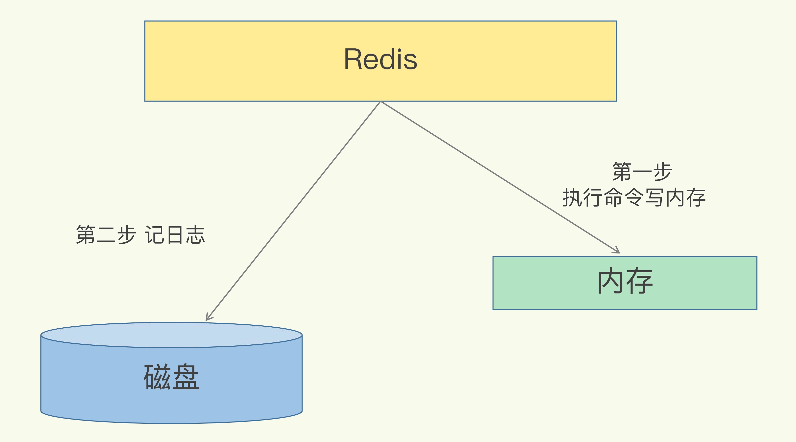

AOF
AOF
- 数据库的写前日志（Write Ahead Log, WAL), 是先把修改的数据记到日志文件中，以便故障时进行恢复。不过，AOF 日志正好相反，它是写后日志，“写后”的意思是 Redis 是先执行命令，把数据写入内存，然后才记录日志
AOF记录的内容

- 数据库的redo log(重做日志), 记录的是修改后的数据. AOF记录的是数据的执行命令
- AOF日志内容有三个部分, 每部分都是由”$”+数字开头, 后面紧跟着具体的命令、键或值.
- 如下图所示, 这个 “*3”表示当前命令有三个部分，这里$表示有多少个字节
AOF三种策略
AOF一共有三种策略, 分别是no, every sec, always三种策略.
- No 操作系统控制的写回. 每个写命令执行完，只是先把日志写到 AOF 文件的内存缓冲区， 由操作系统决定何时将缓冲区内容写回磁盘。
- Everysec 每秒写回, 每个写命令执行完，只是先把日志写到 AOF 文件的内存缓冲区，每隔一秒把缓冲区中的内容写入磁盘
- Always 同步写回：每个写命令执行完，立马同步地将日志写回磁盘
日志写到内存缓冲区对应的是write操作, 日志写回到磁盘对应的是fsync
fsync 需要把日志记录写回到磁盘后才能返回，时间较长
write操作只需要写内容到缓冲区, 就可以返回
Always 是同步写回, 需要确保日志写回到磁盘. 这个策略会阻塞主线程
Everysec 是每隔一秒将日志写入磁盘, 这个操作可以异步执行
No 写回策略. 是由操作系统决定将缓冲区内容写回磁盘, 这个操作也可以异步执行.
AOF重写
随着命令执行次数的增加, AOF日志文件会越来越大.
AOF日志是命令追加, 可以对AOF命令内容进行精简. 减少AOF日志大小
AOF是由后台子进程执行操作.
主线程仍然将命令写入到AOF文件内容缓冲区,
后台子进程会对原来的AOF文件进行数据拷贝, 同时也会将命令写入到AOF重写文件的内容缓冲区.
等后台子进程操作完成, 重写日志记录的这些最新操作也会写入新的 AOF 文件
此时, 就可以用新的AOF文件代替旧的AOF文件
后台子进程采用写实复制的功能. 写实复制值的是子进程跟主进程指向相同的内存地址空间,
只有当用户对key进行修改时, 主进程就会拷贝这个key对应的内存数据出来, 申请新的内存空间, 然后在上面进行数据修改, 这样就不会影响到原来的数据
写实复制: fork子进程一瞬间是会阻塞主线程的, 文件重写过程中, 用户的对key值修改的越多, 需要申请内存空间, 申请内存空间越长, 也会产生阻塞风险.

本博客所有文章除特别声明外，均采用 CC BY-SA 4.0 协议 ，转载请注明出处！